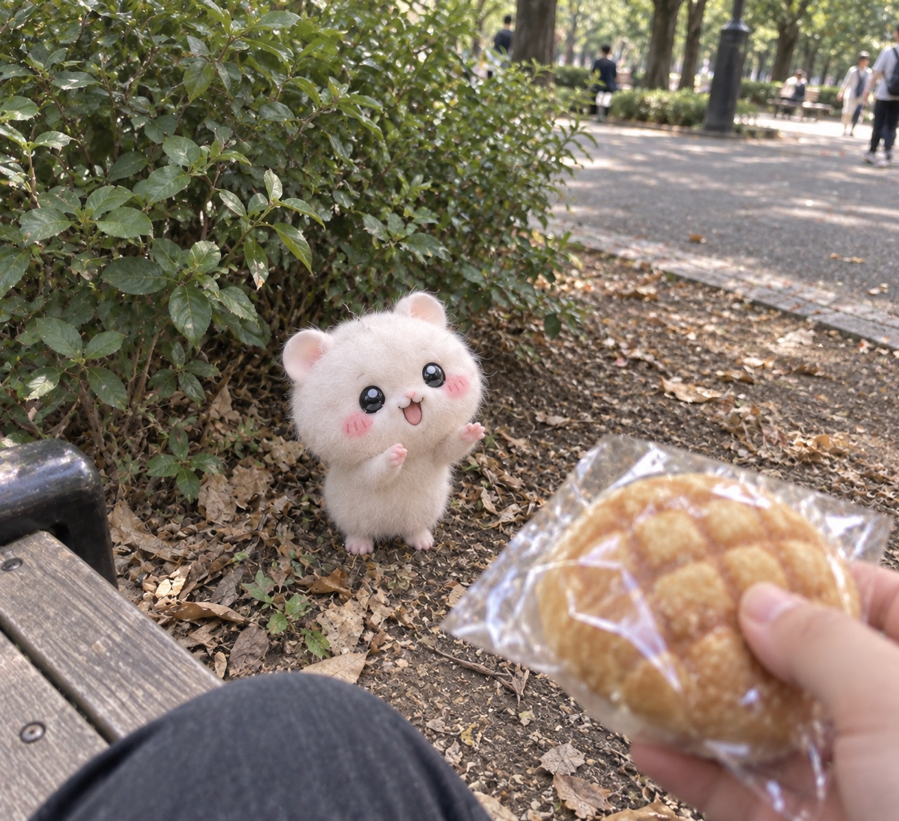

ちい族ニュースアーカイブ
2026年9月、東京・上野公園で発見された謎の生物「ちい族」。
その発見から、空前のペットブーム、社会問題化、
そして新たな種族の登場までを追った記録。

【速報】「リアルち◯かわ」上野公園に出現
カタコトの日本語でパンをねだる謎の白い生物。 動画は1000万回再生を突破した。

【続報】「リアルち◯かわ」の正体判明 新種の「ちい族白鼠種」と命名
人間の3〜4歳児程度の知能を持つ新種と判明。 飼育希望の問い合わせが殺到する。

空前の「ちい族」ブーム到来！ 全国で売り切れ続出
ペットショップで販売開始。 一匹10万円を超える価格でも争奪戦となった。

【物議】「こんなはずじゃなかった…」 ちい族の“図々しい本性”に悲鳴
飼育トラブルが急増。 空前のブームに早くも陰りが見え始める。

【社会問題】「白いゴミ屋敷」が街を埋め尽くす
捨てちいと野良ちいが激増。 爆発的な繁殖が全国で社会問題となった。

【速報】政府、ちい族白鼠種を「指定管理鳥獣」に正式指定
全国で捕獲・個体数管理が本格化。 白鼠種をめぐる社会の扱いは大きく転換した。

【炎上】「ちい虐」動画がプラットフォームを侵食
「駆除対象だから」と正当化する投稿者たち。 削除と再投稿のいたちごっこが続く。

【速報】「今度は本当に賢い」 言葉を完璧に話す新種「ハチ種」公表
人間の10歳児程度の知能を持つ近縁種。 白鼠種とは大きく異なる性質が注目を集める。

【空前】ハチ種、ついに販売開始 一匹30万円でも即日完売
新たなペットブームの一方、 店内では白鼠種との残酷な価格差が生まれていた。
【検証】白鼠種、野生個体ほぼ絶滅へ ハチ種は“家族”として定着
最初の発見から約5年。 大きく分かれた二つの種族の運命を振り返る。